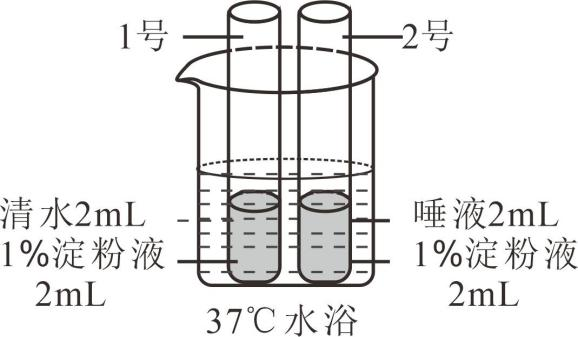

2023年北京市中考生物真题 · 选择题 第6、7、8、9、10题
6. 甜椒的花中能够发育形成果实的结构是（ ）
A. 雌蕊B. 雄蕊C. 胚珠D. 子房
7. 用黄豆种子发豆芽，下列做法不合理的是（ ）
A. 选取籽粒饱满的种子B. 提供适宜的发芽温度
C. 种子始终浸没在水中D. 发芽过程保持通风透气
8. 平衡膳食能最大程度地满足人体的营养需要，保证健康。下列做法不符合平衡膳食的是（ ）
A. 不吃早餐，偏食挑食B. 吃动平衡，健康体重
C. 规律进餐，适量饮水D. 食物多样，合理搭配
9. 同学们按下图所示进行实验，一段时间后向两支试管中分别滴加碘液，观察颜色变化。下列叙述错误的是（ ）

A. 目的是探究唾液对淀粉的消化作用B. 试管中的液体需要充分混合均匀
C. 水浴温度为37℃，模拟了人体体温D. 2号试管溶液的蓝色比1号试管的深
10. 血液成分中，富含血红蛋白，具有运输氧功能的是（ ）
A 白细胞B. 红细胞C. 血小板D. 血浆
白细胞B. 红细胞C. 血小板D. 血浆